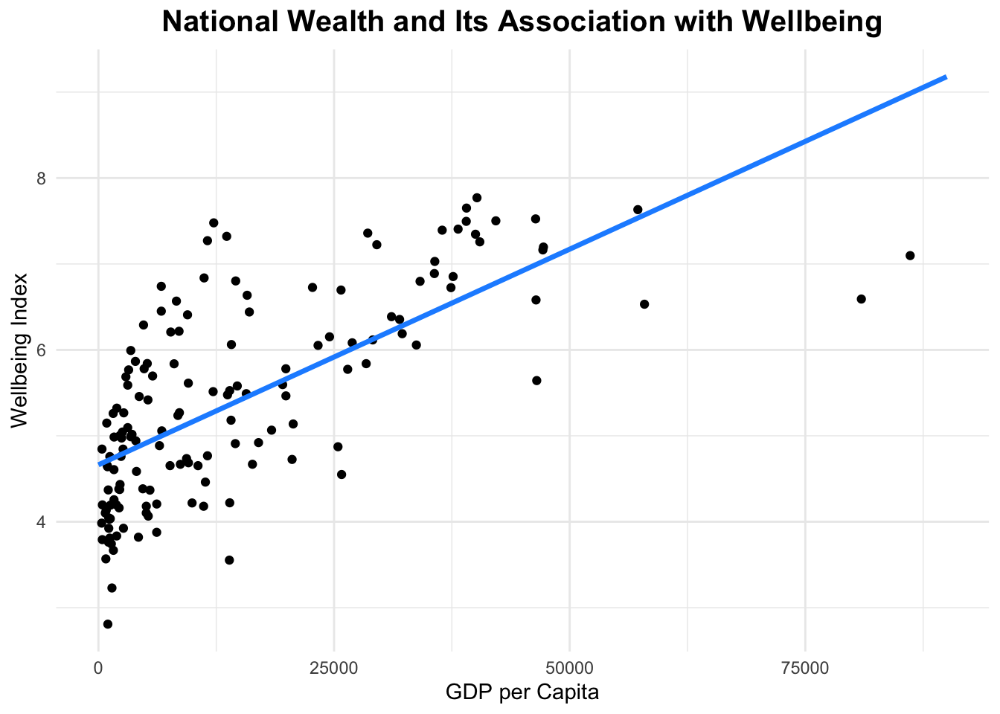
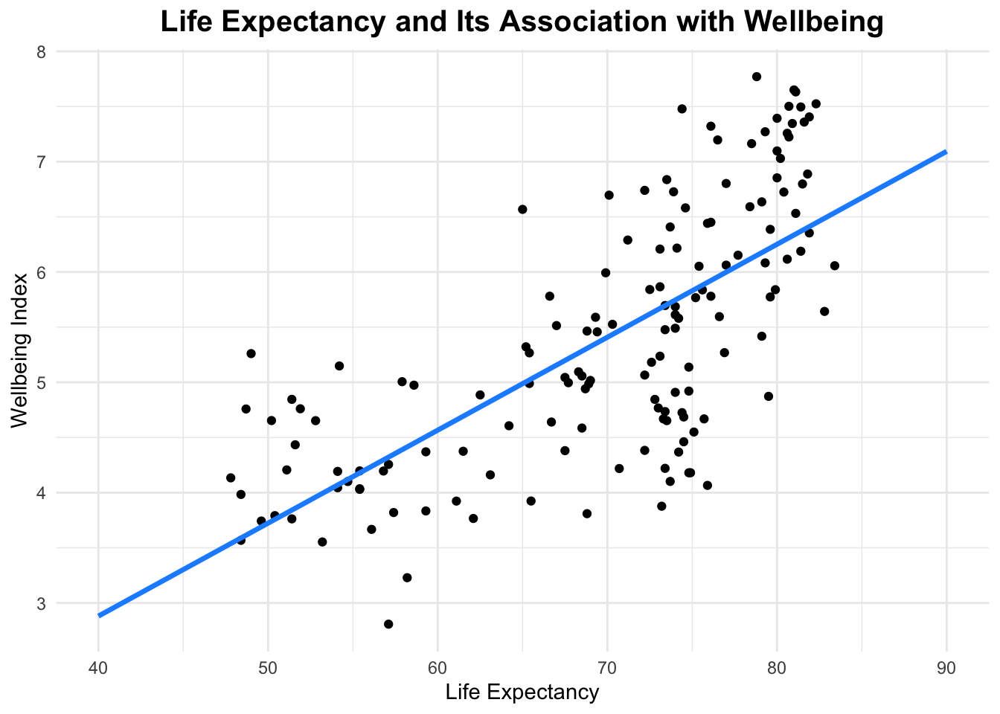
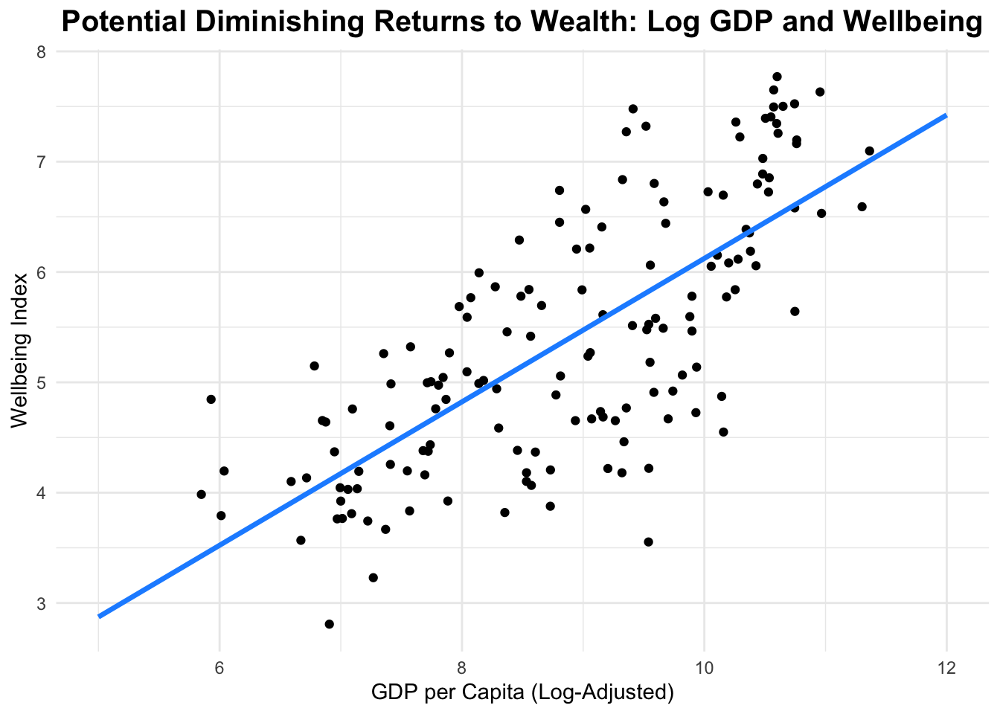

Preface
What drives national wellbeing – wealth, longevity, or both?
Wealthier nations tend to report higher levels of happiness, but economic growth may not increase wellbeing at a constant rate. At the same time, longer life expectancy reflects improvements in health, stability, and quality of life, which may also contribute to how people evaluate their lives.
In this analysis, I examine how wellbeing relates to GDP per capita and Life Expectancy, first individually and then jointly. The goal is to determine whether wealth exhibits diminishing returns and whether economic prosperity or longevity plays the stronger independent role in predicting national wellbeing.

Dataset Introduction
This analysis uses a dataset from the Happy Planet Index(hpi) containing cross-national indicators of wellbeing, economic output, and longevity at a single point in time.
The primary variables of interest are Wellbeing, measured as a national wellbeing index, GDP per capita, representing economic output per person, and Life Expectancy, representing average years of life within a country. For the purposes of this analysis, GDP per capita is examined both in its raw form and in a log-adjusted form (gdp_adj) to account for nonlinearity and potential diminishing marginal returns to wealth.
The dataset includes 151 observations, corresponding to individual countries. Because the data are cross-sectional rather than longitudinal, the analysis focuses on differences across nations rather than changes over time.
The central question of interest is whether – and to what extent – national wealth and longevity independently predict wellbeing. Specifically, this analysis investigates whether economic prosperity exhibits diminishing returns and whether wealth or life expectancy plays the stronger role once both are considered simultaneously.
Finally, it is important to note that GDP per capita and life expectancy are broad proxies for development. While they capture economic and health dimensions of national conditions, they do not fully account for institutional quality, cultural factors, or social cohesion. As such, the goal of this analysis is to evaluate statistical association rather than to claim causal determination.
Modeling Wellbeing as a Function of GDP per Capita
To begin, I model national wellbeing as a function of GDP per capita to evaluate the baseline relationship between economic prosperity and happiness. GDP per capita serves as a proxy for material wealth, allowing us to assess whether richer nations systematically report higher levels of wellbeing.
| term | estimate | std.error | statistic | p.value |
|---|---|---|---|---|
| (Intercept) | 4.662 | 0.09232 | 50.5 | 1.266e-95 |
| GDPcapita | 5.019e-05 | 4.24e-06 | 11.84 | 3.32e-23 |
| Test statistic | df | P value | Alternative hypothesis | cor |
|---|---|---|---|---|
| 11.84 | 149 | 3.32e-23 * * * | two.sided | 0.6962 |
The results indicate a strong positive association between GDP per capita and wellbeing (r = 0.696, p < >.001), suggesting that wealthier nations tend to report higher happiness levels. However, the scatterplot >reveals noticeable curvature – particularly at lower income levels – where gains in GDP appear to produce >larger increases in wellbeing than at higher levels of wealth. This pattern raises the possibility that the >relationship may not be linear, motivating further examination of potential diminishing returns. [1]
Modeling Wellbeing as a Function of Life Expectancy
Next, I examine whether national wellbeing is associated with life expectancy. Life expectancy serves as a broad indicator of population health, healthcare access, and overall social development. This model evaluates whether countries where people live longer also report higher levels of wellbeing.

| term | estimate | std.error | statistic | p.value |
|---|---|---|---|---|
| (Intercept) | -0.4891 | 0.4876 | -1.003 | 0.3174 |
| LifeExpectancy | 0.08425 | 0.006916 | 12.18 | 3.963e-24 |
| Test statistic | df | P value | Alternative hypothesis | cor |
|---|---|---|---|---|
| 12.18 | 149 | 3.963e-24 * * * | two.sided | 0.7064 |
The results show a strong positive relationship between life expectancy and wellbeing (r = 0.706, p < .001), indicating that nations with longer average lifespans tend to report higher happiness levels. The scatterplot suggests a fairly linear association, with wellbeing increasing steadily as life expectancy rises. Unlike GDP per capita, there is less visible curvature in this relationship, suggesting more consistent returns to improvements in longevity.
Addressing Nonlinearity: Log GDP per Capita
The initial GDP model suggested that the relationship between wealth and wellbeing may not be strictly linear. To address this potential nonlinearity, GDP per capita is log-transformed, allowing the model to better capture possible diminishing returns to wellbeing. This adjustment helps determine whether the strength of the association changes once the curvature in the data is accounted for.

| term | estimate | std.error | statistic | p.value |
|---|---|---|---|---|
| (Intercept) | -0.3771 | 0.4404 | -0.8563 | 0.3932 |
| gdp_adj | 0.65 | 0.04907 | 13.25 | 5.765e-27 |
| Test statistic | df | P value | Alternative hypothesis | cor |
|---|---|---|---|---|
| 13.25 | 149 | 5.765e-27 * * * | two.sided | 0.7354 |
After log-adjusting GDP per capita, the relationship with wellbeing remains strong (r = 0.735, p < .001) and appears more linear. The improved fit supports the idea of diminishing marginal returns, where increases in income are associated with larger gains in wellbeing at lower levels of wealth and smaller gains at higher levels. This transformation provides a more accurate representation of how economic prosperity relates to national happiness.
Relative Predictive Strength of Wealth and Longevity
To determine whether wealth or longevity plays the stronger role in predicting wellbeing, both variables are included simultaneously in a standardized regression model. Standardizing the predictors allows for direct comparison of their relative effects, as each coefficient reflects the expected change in wellbeing associated with a one standard deviation increase in the predictor. This approach compares the independent contribution of economic prosperity and life expectancy.
| term | estimate | std.error | statistic | p.value |
|---|---|---|---|---|
| (Intercept) | 7.501e-16 | 0.05385 | 1.393e-14 | 1 |
| scale(gdp_adj) | 0.482 | 0.09927 | 4.856 | 3.014e-06 |
| scale(LifeExpectancy) | 0.3021 | 0.09927 | 3.043 | 0.002774 |
Both log-adjusted GDP and life expectancy remain statistically significant predictors of wellbeing when modeled together. However, the standardized coefficient for GDP (β = 0.482) exceeds that of life expectancy (β = 0.302), indicating that wealth exerts a stronger independent association with national wellbeing after accounting for longevity. While health and longevity clearly matter, economic prosperity appears to play the more dominant role in explaining cross-national differences in happiness. [2]
Wrap-Up, Considerations, & Course Connection
Conclusion
Across models, both national wealth and life expectancy exhibit strong positive associations with wellbeing. The baseline results show that richer and longer-living nations tend to report higher happiness levels. However, adjusting GDP per capita for nonlinearity reveals evidence of diminishing marginal returns – suggesting that gains in wellbeing are larger at lower levels of income and taper off as countries become wealthier. When both predictors are examined simultaneously, each remains statistically significant, but standardized results indicate that economic prosperity exerts the stronger independent association with national wellbeing.
Together, the findings suggest that both wealth and longevity contribute meaningfully to cross-national differences in happiness, but income – particularly at lower levels of development – plays a slightly more dominant role.
Limitations of the Approach
Several limitations should be acknowledged. First, the analysis is cross-sectional, meaning it compares countries at a single point in time rather than examining changes within countries over time. Second, GDP per capita and life expectancy are broad proxies for development and may capture overlapping institutional and social factors, such as governance quality, education, inequality, or political stability. Omitted variable bias may therefore influence the relationships. Finally, while the log transformation addresses nonlinearity in GDP, the models remain relatively simple and assume linear relationships after adjustment.
Future Directions
With additional data or time, several extensions could strengthen the analysis. A longitudinal dataset would allow for examining how changes in wealth or life expectancy within a country affect changes in wellbeing over time. Incorporating additional predictors – such as income inequality, education levels, political freedom, or social dynamics – could help disentangle the mechanisms through which development influences happiness. Finally, exploring interaction effects between wealth and longevity may reveal whether the relationship between income and wellbeing differs across levels of health development.
Connecting the Visualizations to Course Concepts
The visualizations in this analysis are effective because they align with several core principles of good data communication discussed in class.
First, the use of scatterplots is appropriate for displaying relationships between two quantitative variables. Scatterplots preserve individual data points, allowing the reader to see distribution, clustering, spread, and potential outliers rather than just summary statistics. This supports transparency and avoids hiding variation.
Second, the addition of fitted regression lines enhances interpretability. Rather than requiring readers to infer trends visually, the line makes the direction and strength of association clear. This supports the principle of reducing cognitive load for readers.
Third, the visualizations use minimalist design choices (consistent axes, limited color palette, clean theme), which reduce clutter and keep attention focused on the data. The consistent formatting across sections also supports comparison between models.
Finally, the progression of visuals – from raw GDP, to life expectancy, to log-adjusted GDP, to standardized comparison – creates a clear analytical narrative. Rather than presenting isolated charts, the sequence guides the reader through a logical modeling process. This aligns with the idea that effective visualizations do not only display data, but tell a structured story.
Citations
[1] B. Abel, “Is there a way to put code blocks in block quotes?,” Meta Stack Overflow, Jan. 06, 2016. https://meta.stackoverflow.com/questions/314122/is-there-a-way-to-put-code-blocks-in-block-quotes
[2] M. Alexander, “Standardized regression coefficients using lm() and scale() differ from those using lm.beta() or cor(),” Stack Overflow. https://stackoverflow.com/questions/39158119/standardized-regression-coefficients-using-lm-and-scale-differ-from-those-us